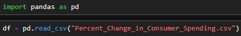
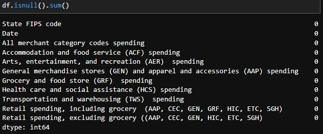
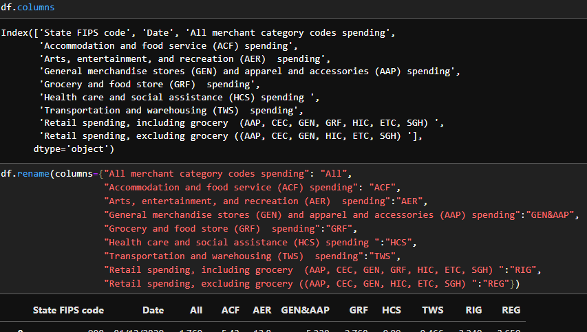
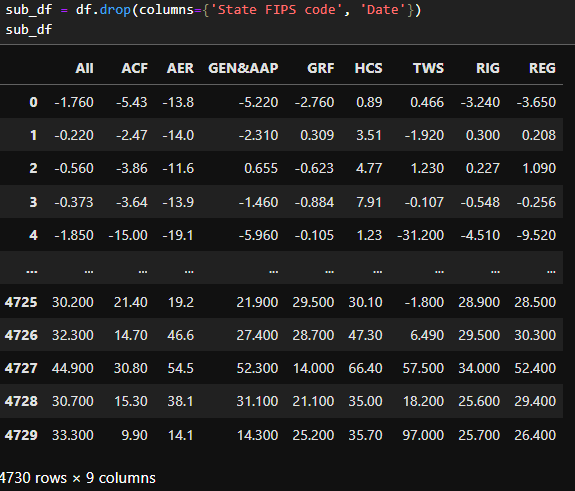
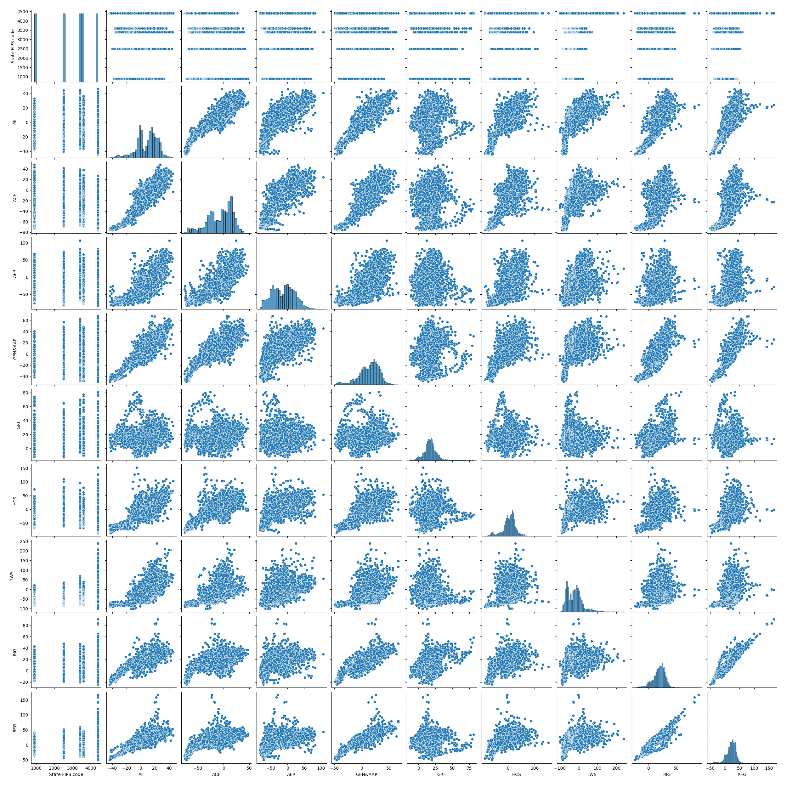
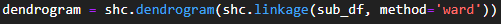
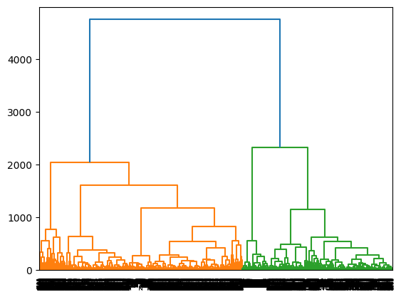
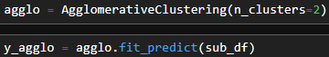
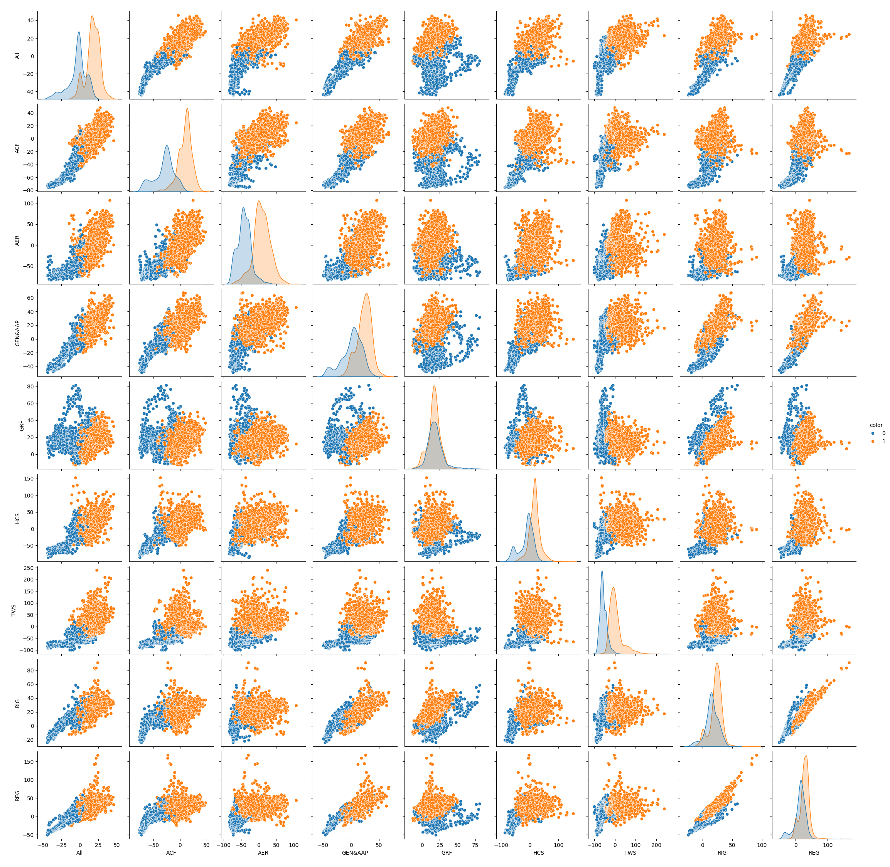

Consumer Spending In Different Industries
Introduce the problem
The stock market is the lottery where people's lives change for the better or worse. During this project, we will look at a really high-level view of which industries are correlated. The main question we will try to answer is: Are there changes in one sector that are also reflected in another? For instance, is an increase or decrease in grocery shopping correlated with health care spending?
What is clustering and how does it work?
Clustering is a technique that involves grouping data points together.
We can use the technique to classify each data point into a specific grouping.
Each group formed will have similar features to each other than those of other groups.
K-means is one of the methods of clustering that K centroids are using to group datapoints.
- For k-means, you start by randomly picking a data point as the center of the K centroids.
- Then you repeat the following steps until the centroids stop changing or the loop limit is reached.
- First for each centriod find the mean of all data points within it.
- Move the centriod to the calculated mean.
Another method agglomerative/hierarchical clustering works by repeating the same steps over and over until there is one master cluster that has all the data points under it.
- You start with each data point counting as its own cluster.
- Then find the two closest clusters
- Merge them into a new, larger cluster.
- Repeat from step 2
In the end, you end up with a binary tree where the root has a super cluster that includes all data points, and each left has only one data point. So depending on how many clusters you want, you can go higher or lower in the tree.
Introduce the data
The dataset we will use was downloaded from Kaggle.com.
The dataset was posted by RAJATSURANA979.
The data was last updated around November 28 2023 and this is the version used in this projectt.
The dataset has 4730 rows, and there are 11 columns of data.
Representing a period from 01/13/2020 to 10/15/2023.
The data does not include all industries but some major generalized ones.
The FIPS code is location where data was collected them being: Connecticut, Massachusetts, New Jersey,
New York, and Rhode Island.
Each feature representing spending is of only credit card spending relative to overall January 2020.
The speading features being:
- All merchant category codes spending
- Accommodation and food service spending
- Arts, entertainment, and recreation spending
- General merchandise stores and apparel and accessories spending
- Grocery and food store spending
- Health care and social assistance spending
- Transportation and warehousing spending
- Retail spending, including grocery
- Retail spending, excluding grocery
Pre-processing
(Code File)Starting the processing of the dataset by loading it as a Pandas dataframe.  Checking the data for null to check if the set needs to be cleaned.  Since the data has no nulls, we can move on. As you can see, each column name is really long, which may cause a readability issue by taking up too much space in the visuals. So we will rename the columns to shorter acronyms.  Finally for the last pre-processing step we create a sub dataframe with FIPS and date removed because they are not needed in answering out question. 
Data Understanding/Visualization
Even before creating a visualization, it seems obvious that there will be some correlation between certain
features. For instance, since all merchant and two retail spending features include other features in the
calculation, there is likely to be some level of correlation. For others, there would likely also be some
level of correlation due to just economic cycles of ups and downs in spending and saving.
Let's create a pair plot to see if those obvious correlations exist.

At first glance, it may seem there is an obvious correlation between all values (I thought so at first), but
if you look closer, you see that most "lines" are quite big, meaning a given value for a feature gives an
extremely big range of possible values for the second. Its surprising there is a similar issue with many
comparisons with all, merchant, and two retail spending features, meaning there is enough dilution from
combining all features that correlation decreased. There was a correlation between the two retail stores,
meaning grocery had an impact on the correlation but not enough to disrupt all other features together at
many points.
Modeling
Since initial look didn't give us an accurate correlations of features lets move onto using clustering
models to see its preditive capabilities.
For the model I have decided to use agglomerative because it doesn't require me to trial and error the
number of K clusters. It also allows a non perfect cluster while for K-means clusters must be a centriod.
For agglomerative first we create a dendrogram to find out the number of clusters to use.

We use the ward method because it focus on reducing variance of all attributes within a cluster.

We choose use 2 clusters because its the section with height distance between two clusters merging.

Storytelling
To understand how well our model did and which features were separated the most, we once again created a pairplot. Although this time we use the subdataframe since we used it for our model and we set hue to represent the cluster a datapoint belongs to.

With the model, the issue discussed about the huge still exists, but it is easier to visualize in
certain comparisons like ACF and GEN&AAP, where if one has a positive, another has roughly positive
increases. While in the case of AER and GRF, the orange cluster seems to cut into a blue cluster, highly
likely signifying the model didn't use these two together as much to create clusters.
There are likely days worth of analysis to be done on this overly simplified model to understand the
reason for each clustering choice, but it is beyond the scope of this project.
But to answer the original question, are there changes in one sector that are also reflected in another? It
seems the answer is not straight forward and is a kinda that the current level of the answer is that
no change in one sector doesn't guarantee a change in another, but with enough narrowing, there is likely
correlation because, although quite large, a change does give a range that changes at different points.
Impact Section
The benefits of knowing the connection between different industries are: the ability to prepare for lower
spending based on other industries; the ability to take part in the stock market with a slightly higher
level of knowledge, thus lower risk; and if there is an industry that is highly correlated with many others,
it may be beneficial to understand and ensure spending in it doesn't decrease.
A negative impact comes from the other side of the stock market, specifically a method called shorting.
Shorting is when investors place bets on the fall of a company's stock price. With the knowledge that can be
gained from expanding this project, it would be possible to say when companies in which industries are
likely to fall, thus people shorting them. While it may seem good that we can make more money for the
company being shorted, it can be extremely negative because shorting can cause prices to plummet even
further, thus worsening a fall for the company even more.
References
Dataset: https://www.kaggle.com/datasets/rajatsurana979/percent-change-in-consumer-spending/
webpages.charlotte.edu/mirsad/itcs6265/group1/ward_min_variance.htmlhttps://seaborn.pydata.org/generated/seaborn.pairplot.html
https://scikit-learn.org/stable/modules/generated/sklearn.cluster.AgglomerativeClustering.html